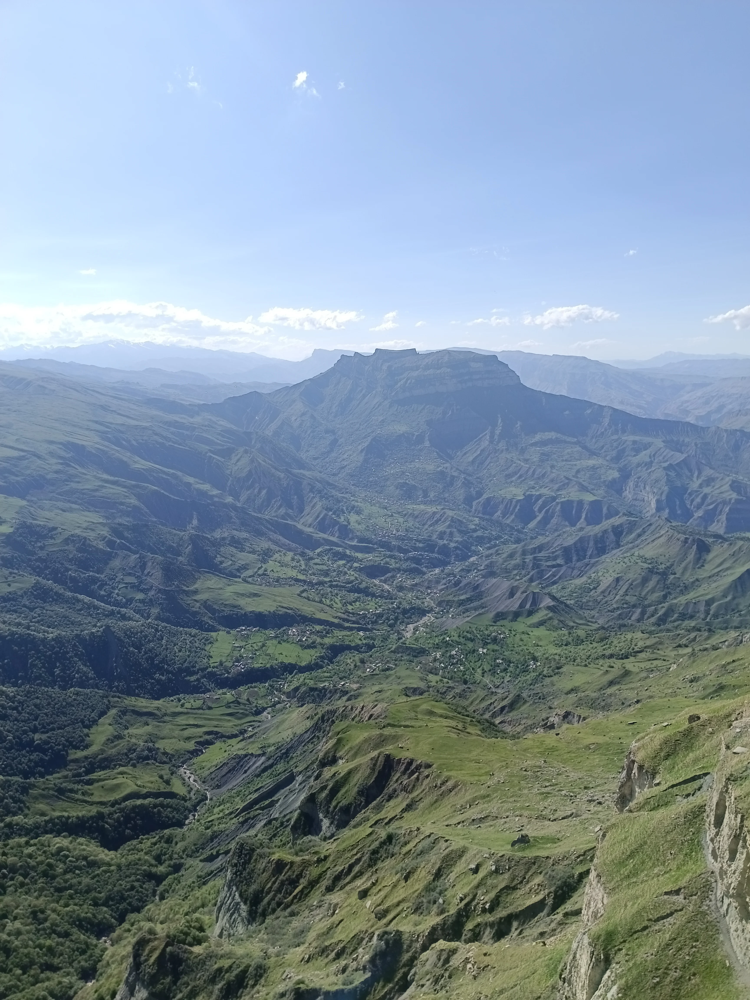
Забронировать
20-26 сентября 2026
Даты:
3/5
Сложность:
76 км
Расстояние:
6 из 6
Осталось мест:
Авторский поход
Авторский поход
Пеший поход по центральному Дагестану с проживанием в гостевых домах. Всё включено.
Маршрут стартует в древнем городе Кумух, следует через 8 исторических сёл, три великих плато ( Турчи, Кегер , Гуниб) и завершается на самой вычокой точке маршру а горе Маяк на плато Гуниб. Волны завоевателей приходили сюда и разбивались о несокрушимых горцев, для которых слово свобода, было дороже собственной жизни. Мы пройдем через четыре поля битвы, в которых решалась судьба Дагестана. В походе нас ждут: старинная архитектура и панорамные виды, горы пирамиды и подземный водопад, орлы над головой и живописные абрикосовые сады.
Мы идем вслед за солнцем дальше на запад, в известняковое сердце страны гор. Земли самодержавных ханов и союзов вольных сёл. Маршрут входит в состав Кавказской тропы и частично совпадает с исторической дорогой, построеной к приезду Императора Александра 2 в Гуниб в 1871 г.
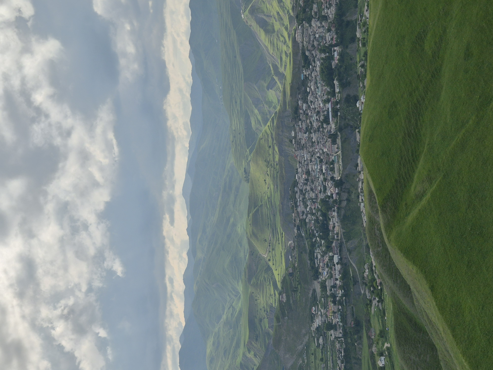
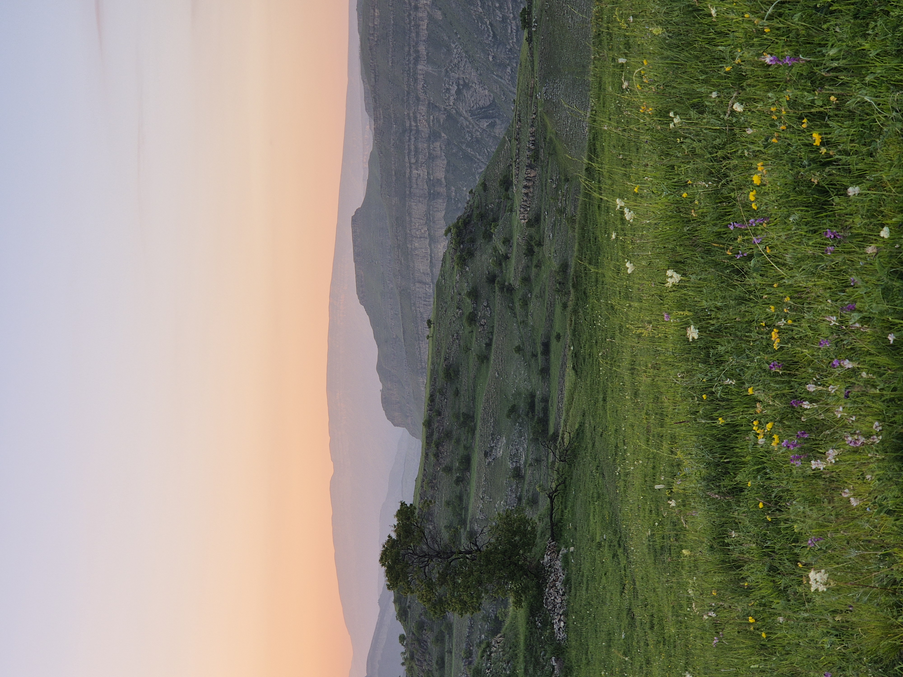
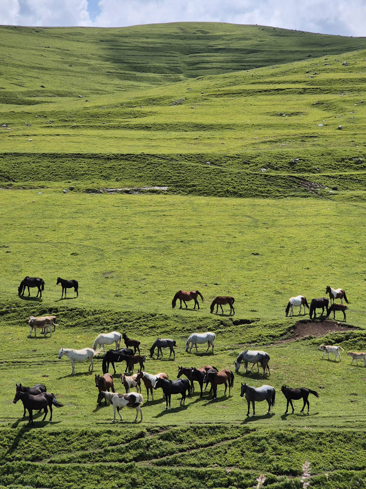
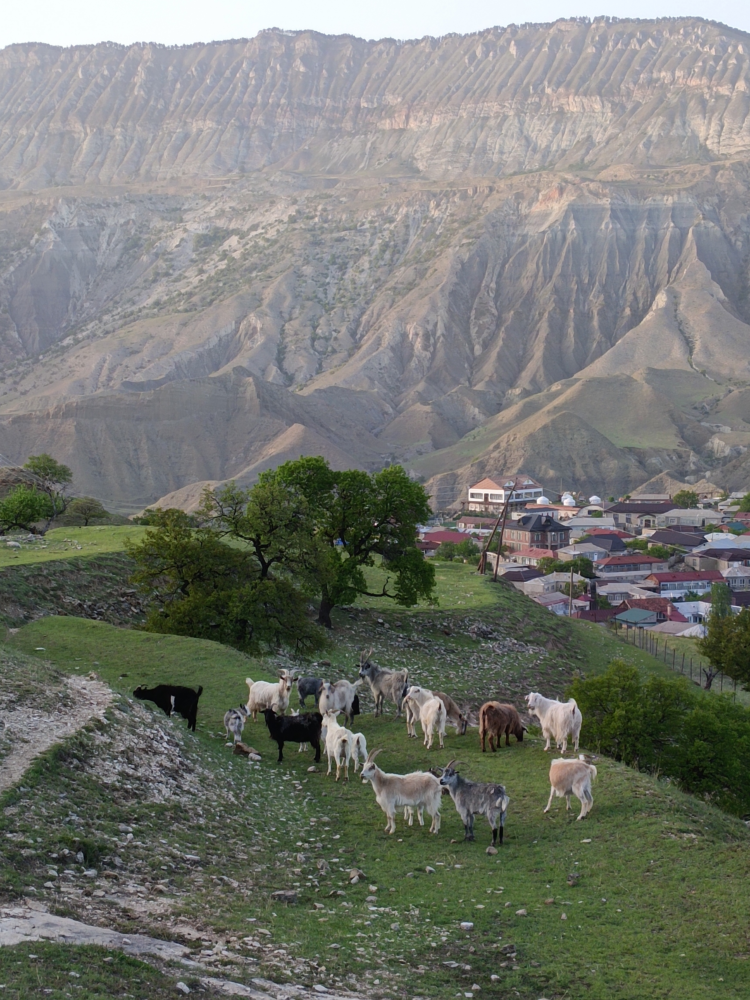
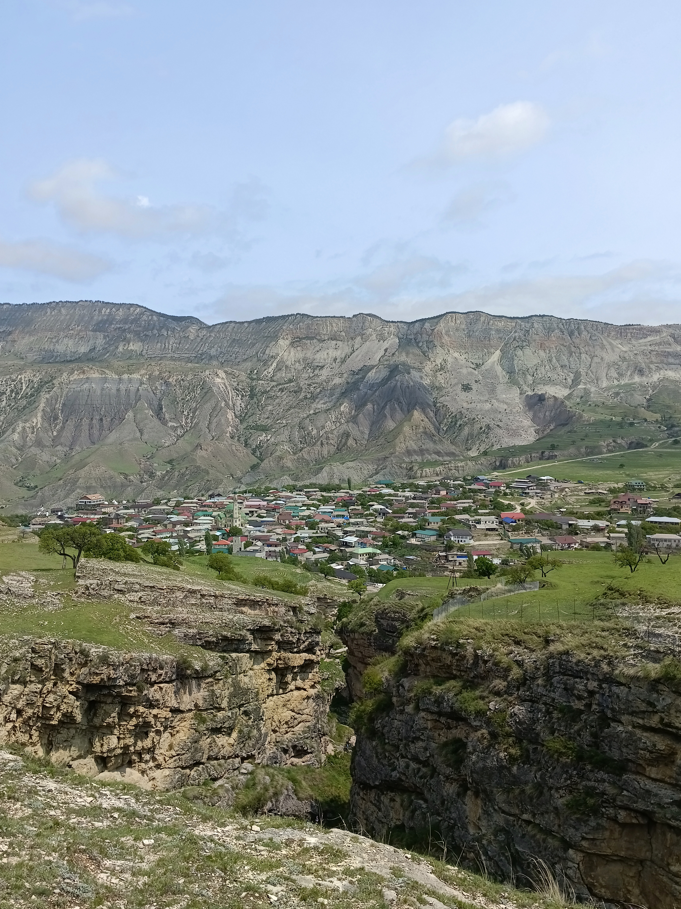
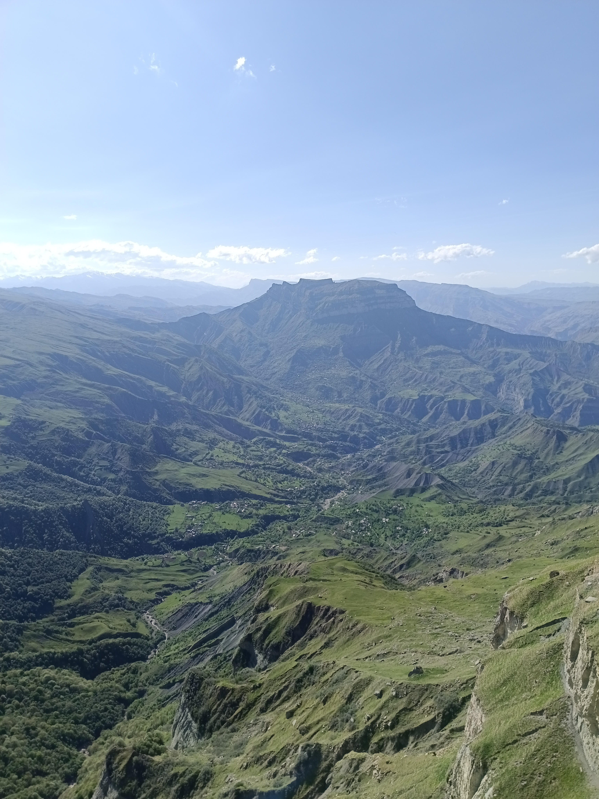
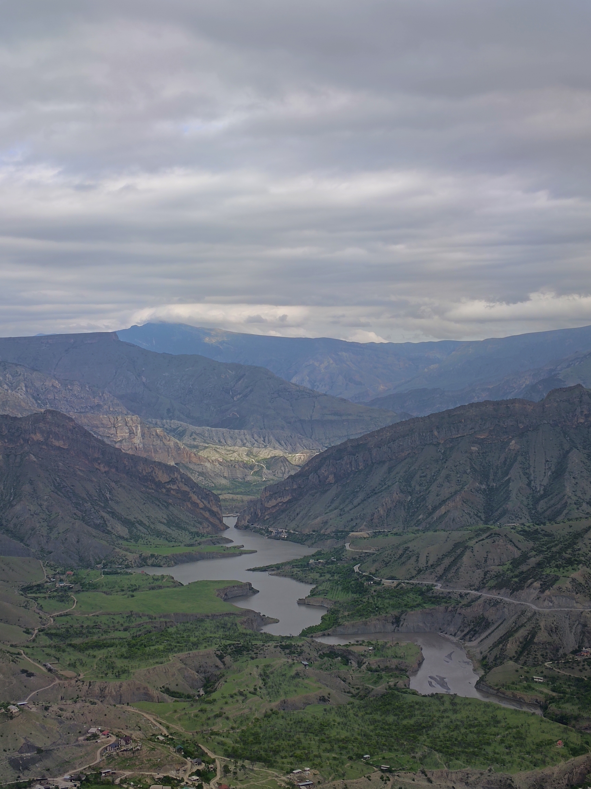


Подробнее
Для кого поход
Маршрут подходит туристам с любым опытом или его отсутвием, желающим увидеть не туристическую жизнь Кавказа и открыть для себя Дагестан с неизвестной стороны. Дневные переходы и перепады высот адаптированы под световой день, чтобы здоровый человек без специальной физической подготовки мог пройти его. При этом нам предстоит пройти три плато и набрать около 3500м высоты на пути в Гуниб.
Район похода
Маршрут "Тропой императора" проходит по центральному Дагестану. В сердце страны гор, находятся удивительные извястниковые плато. Плато Турчи- большой зеленый каменный стол с размерами 12 на 16 км. На вершине находятся русла рек , горы, каньоны и сотни вольно пасущихся животных. Плато Кегер - каменистая саванна почти полностью лишенная растительности. Уникальное место, напоминающее другую планету. Плато Гуниб - природная крепость с отвесными стенами. Гуниб похож на птицу или ладони. Лес растущий наверху оказывает исцеляющий эффект на лёгкие. В альпийской зоне пасутся дикие яки, вершины плато открывается лучший вид на центральный Дагестан.
Программа по дням
-
Кумух. Встречаемся в 12 00 в аэропорту Манас г. Махачкала. Трансфер до села Кумух. Оставаляем вещи в отеле, обедаем, идём гулять по древней столице Лакцев. Высота 1560 м
5 км 250 м 250 м 4 ч
-
Сады и террасы Разминочный день. Идём к подножию плато Турчи через лакские сёла. Вечером на ночёвку возвращаемся обратно в Кумух при помощи трансфера. Расстояние 16 км
500 м 560 м 1560 м 7-8 ч
-
Переход через первое великое плато - Турчи. Его вершина, это особая экосистема, где забываешь, что ты на вершине горы, до тех пор пока не попадёшь в облако. Дополнительное очарование пейзажу, предают вольно пасущиеся вокруг животные. Вечером мы приходим в новую область - Андальскую долину. Ночуем в селе Чох, известным благодаря живописным горным террасам.
17км 1000м 950м 1550м 9ч
-
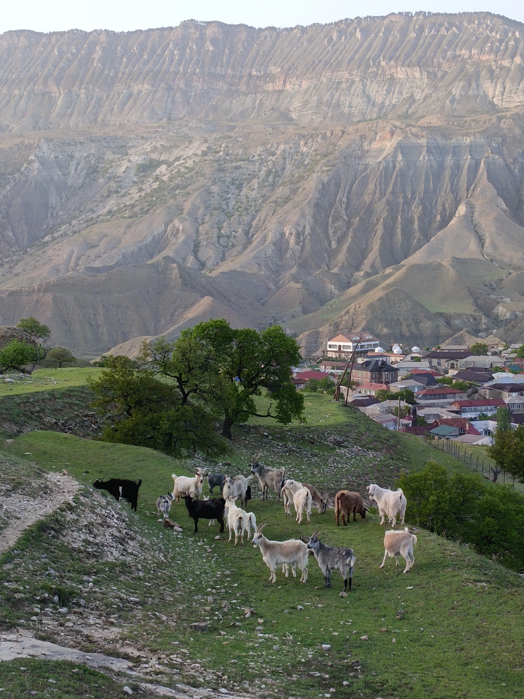
Сегодня совершаем переход через второе великое плато- Кегер. Оно почти лишено растительности и рассечено огромные каньоными. Спускаемся в Салтинскую долину, покрытую террасами и абрикосавыми деревьями. Ночуем в селе Салта.
12 км 520 м 919 м 1550 м 5-6 ч
-
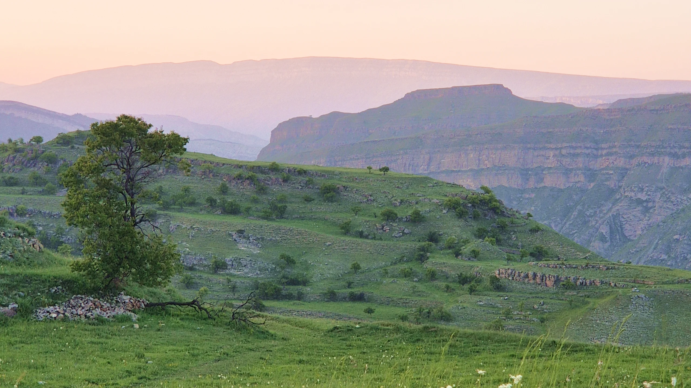
Идём по плато Кегер к его краю, с которого открывается лучший вид на третье великое плато Гуниб. С этой точки его рисовал великий русский художник Айвазовский. Ночуем в комфортном глэмпинге напротив Гуниба.Идём по плато Кегер к его краю, с которого открывается лучший вид на третье великое плато Гуниб. С этой точки его рисовал великий русский художник Айвазовский. Ночуем в комфортном глэмпинге напротив Гуниба.
14 км 425 м 570 м 1380 м 5 ч
-
Храм природы. Гуниб самое удивительное из трех великих плато. По дороге на верхнюю точку плато, гору Маяк , мы пройдем несколько природных зон, включая хвойный лес и альпийские луга. С вершины плато открывается вид на 360, а где то внизу под нами парят орлы. Ночуем в гостевом доме в верхнем Гунибе.
12 км 1000 м 600 м 1700 м 7 ч
-
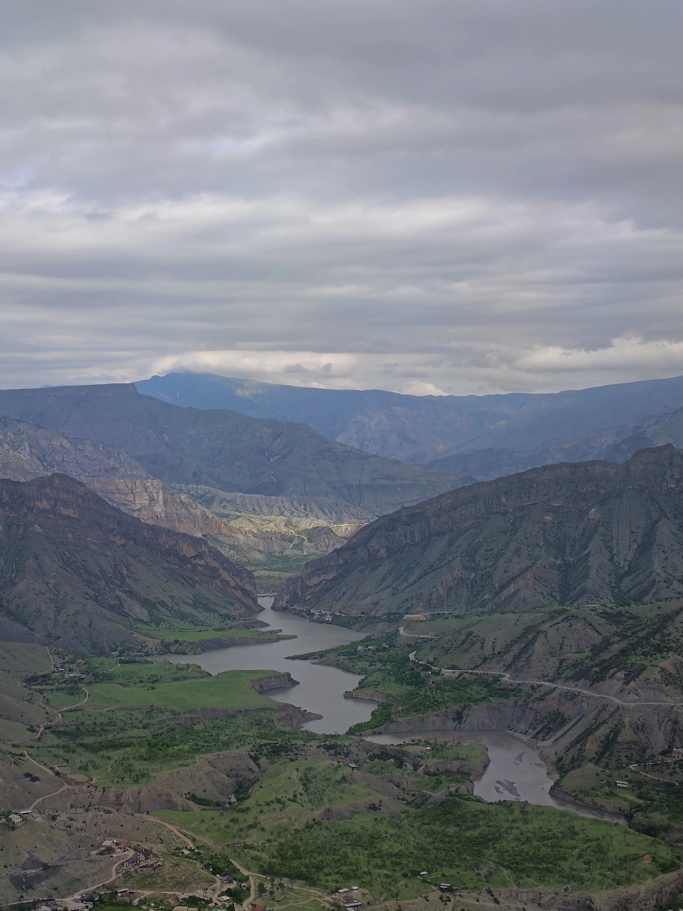
Возвращение Отправляемся на трансфере в Махачкалу.
6 ч
Проводники

Владимир Сергиенко
Сертифицированный инструктор проводник. Два года прожил в Якутской тайге. На протяжении 4 лет принимал участие в создании Кавказской тропы. Прошёл пешком по горам Кавказа более 3500 км. Создатель пешеходной тропы Волга море.
Безопасность мой приоритет
Разведанный маршрут.
Я организую походы только в местности которую хорошо знаю сам. Всё продумано до мелочей.
Связь по рации с мобильным лагерем.
Поход всегда зарегистрирован в мчс. Знание местных жителей, способных прийти на помощь в случаи ЧС.
Поход всегда зарегистрирован в мчс.
Знание местных жителей, способных прийти на помощь в случаи ЧС.
Первая помощь
Инструктор проводник прошёл курс базовой и расширенной первой помощи в Красном Кресте.
Страховка На каждого участника оформляется страховка
Перед походом группа проходит инструктаж по технике безопасности в данном районе. Никакой" воды", только необходимая информация.
Поход: Волга море
-
Даты:
11-19 июня 2026
-
Расстояние
73 км
-
Сложность
3/5
-
Свободные места
1/5
Отправив заявку, вы получите анкету для заполнения данных участника. Далее анкета рассматривается, и мы созваниваемся для собеседования, обсуждаем детали по походу.
Цена 40 000 ₽
Входит в цену
Что входит в стоимость тура:
- Трансфер из Махачкалы до села Кумух
- Трансферы на маршруте
- Проживание
- Питание
- Групповая спортивная страховка
- Сопровождение инструктором проводником
- Трансфер из Гуниба до Махачкалы.
- Регистрация группы в мчс
- Услуги гида-инструктора (реестровый № инструктора-проводника 3938)
- Проживание в глэмпинге
- Баня+чан в глэмпинге (2 часа)
- Трансфер Сосновка – Саратов
Не входит в цену
Что не входит в стоимость тура:
- Билеты до Махачкалы
Почему стоит приехать
1 Пятничная Мечеть села Кумух
Второе по старшенству здание в России. Время постройки середина 8 века. Орхитектура оформление мечети не имеют аналогов в России. Переступив её порог ты попадаешь в параллельный мир, который напоминает о райский жизни и пути ведущим туда.
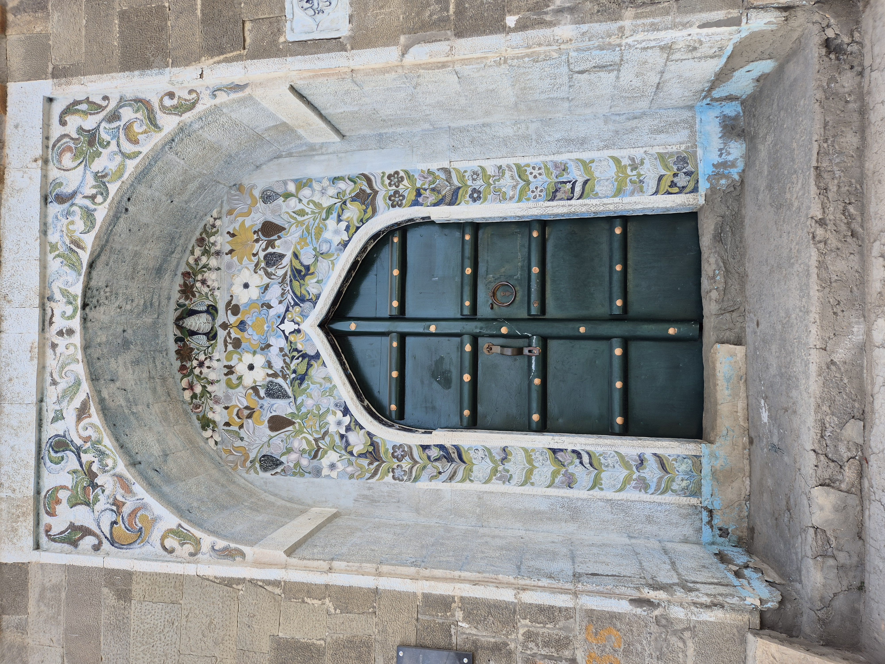
2 Орлы.
Отвесные скалы известняковых плато, служат домом многочисленным орлам и стервятникам. Как только воздух с утра прогреется, большие птицы начинают парить, поднимаясь в небо с теплыми потоками. Можно смотреть вечно на четыре вещи. И кроме огня , воды и работающего человека это полет орлов.
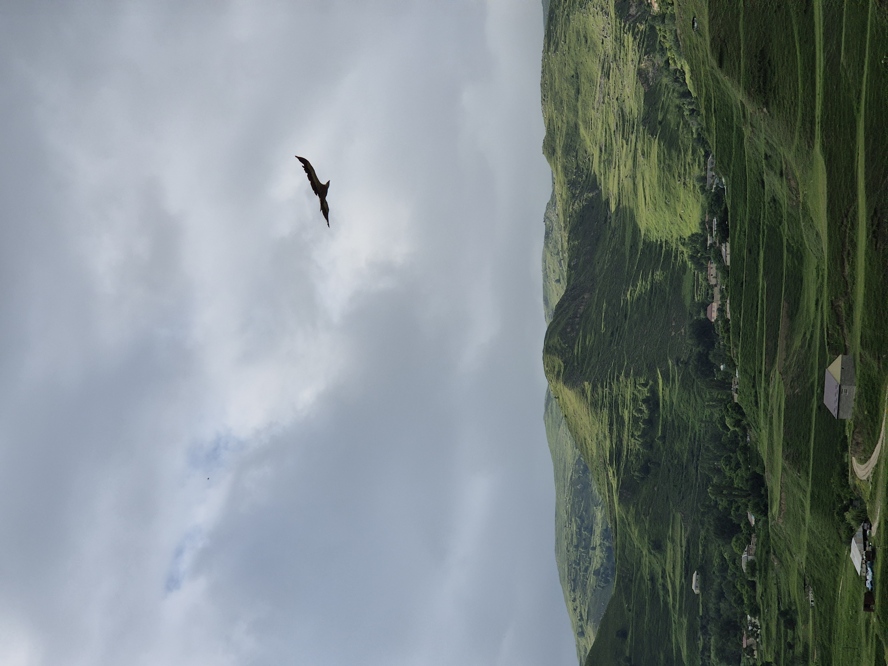
3 Турчи
Широкая плоская гора на вершине которой текут реки и вздымаются горы. Здесь ты забываешь, что находишся на вершине горы, ибо её площадь более 200 квадратных километров. На плато есть покинутый людьми аул, от которого остались стены домов сложенные из масивных камней. Здесь облака плывут на уровне земли, а трава остаётся зелёная всё лето. Пол года в году, плато служит постбищем для многочисленных стад коров и табунов лошадей. Вольные кони в горах, это незабываемое зрелище.
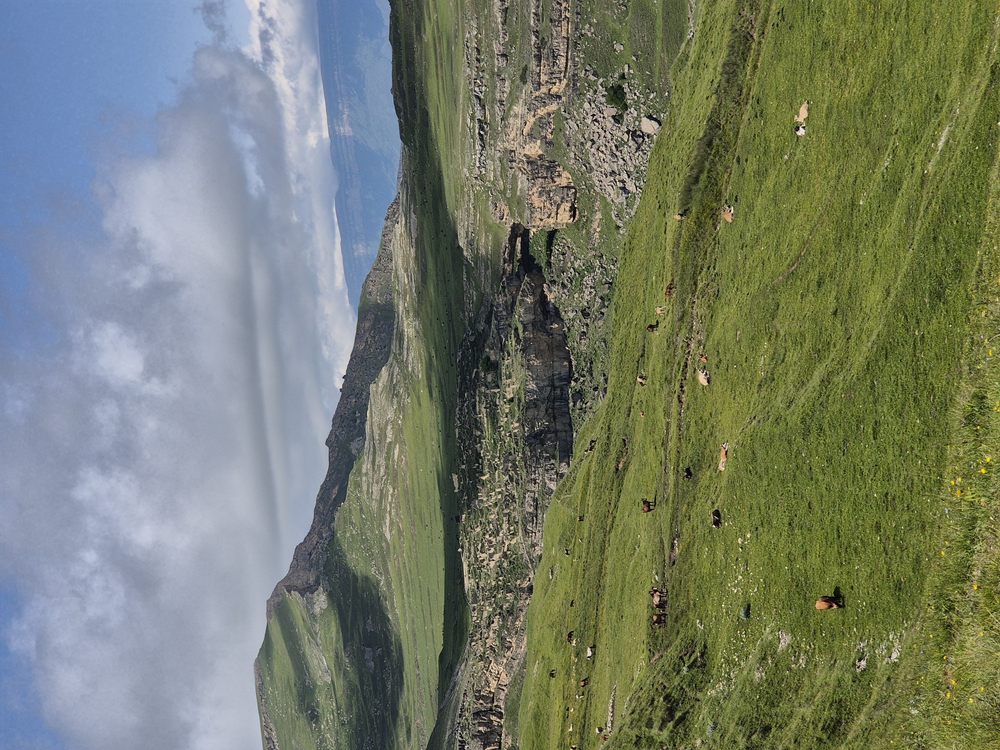
4 Кегер
Известняковое наклонное плато сложной формы. Каменистую саванную почти лешенную растительности прорезают гигантские каньоны. На плато Кегер зародилась горное земледелие.
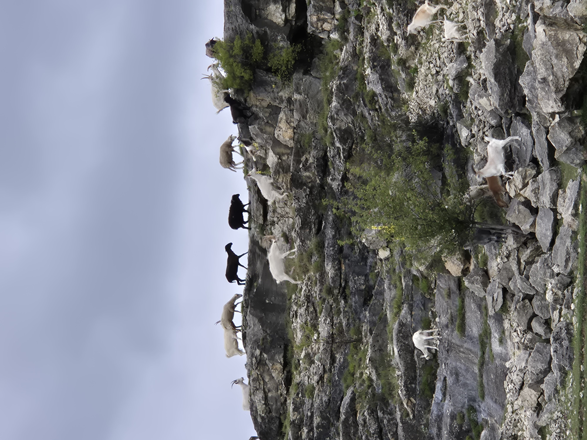
5 Кудалинские пирамиды
Холмы рядом с селом Кудали, в незопамятые времена превращение людьми в правильные пирамидальные террасы.
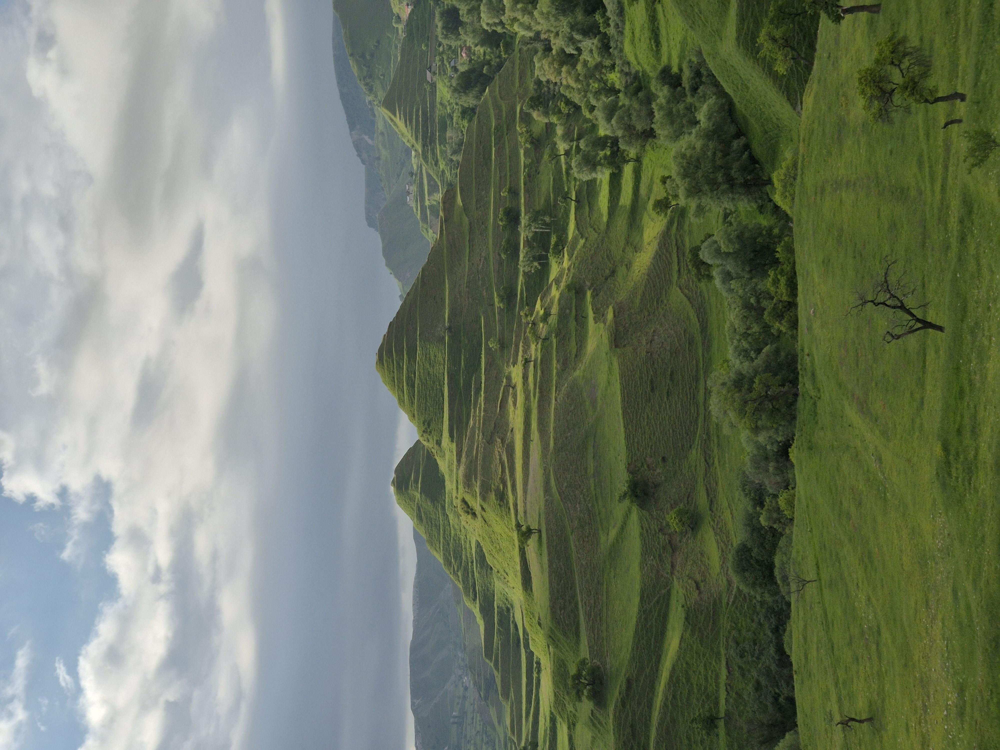
6 Салтинский водопад
Единственный в Дагестане подземный водопад, памятник природы регионального значения.
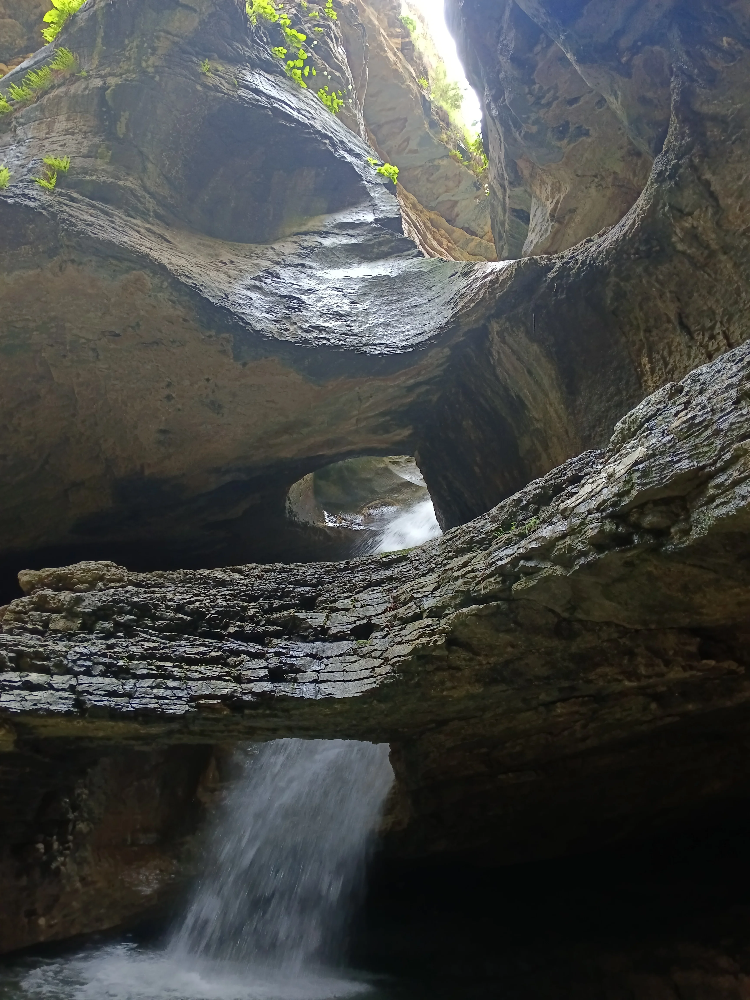
7 Поляна Айвазовского
это живописная обзорная площадка на Кегерском плато, откуда открывается панорамный вид на Гунибское плато. Свое название она получила в честь художника-мариниста Ивана Айвазовского, который написал здесь свою картину «Аул Гуниб»
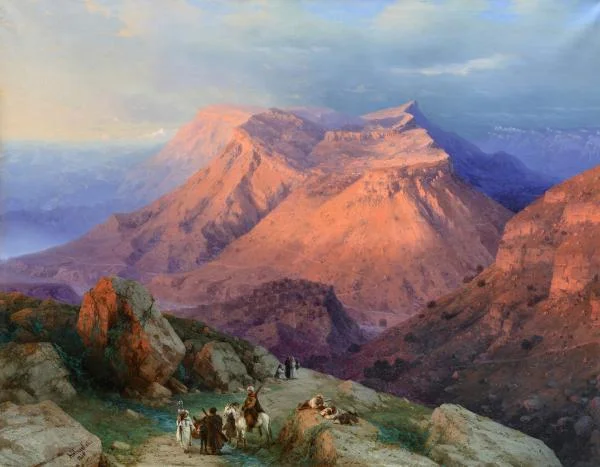
8 Гуниб
известняковое плато и одноименное село в центральном дагестане. По праву можно назвать чудом Кавказа.
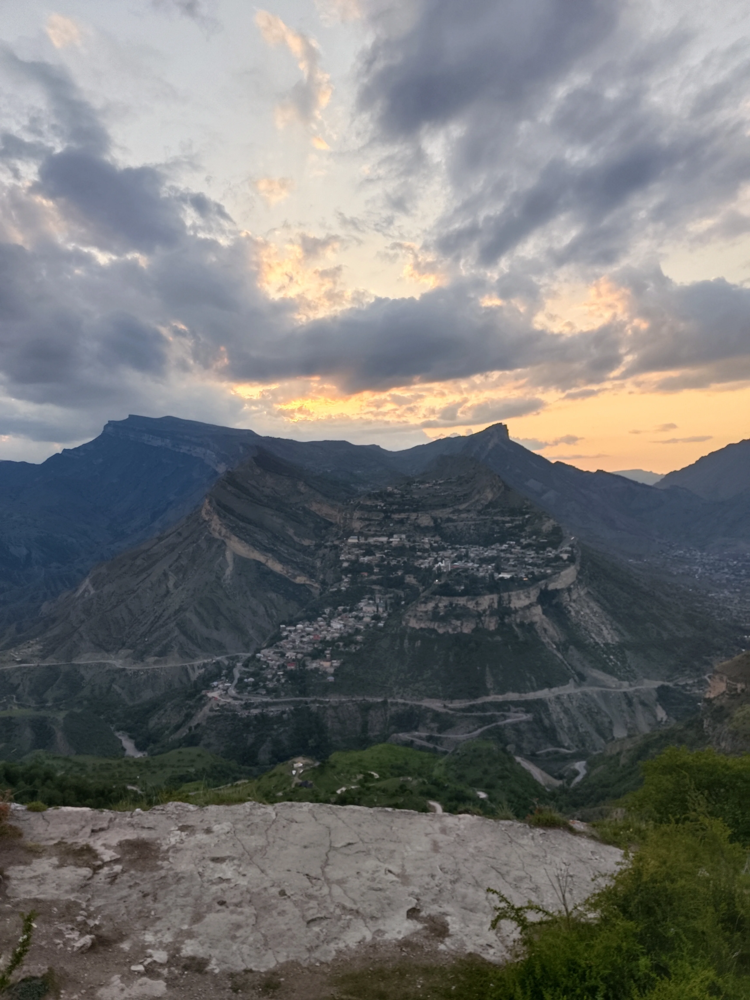
9 Абрикосы
прекрасно растут в долинах и на склонах гор. Это главное дерево центрального Дагестана. На вкус они просто великолепны и заметно отличаются от деревьев растущих на равнине.
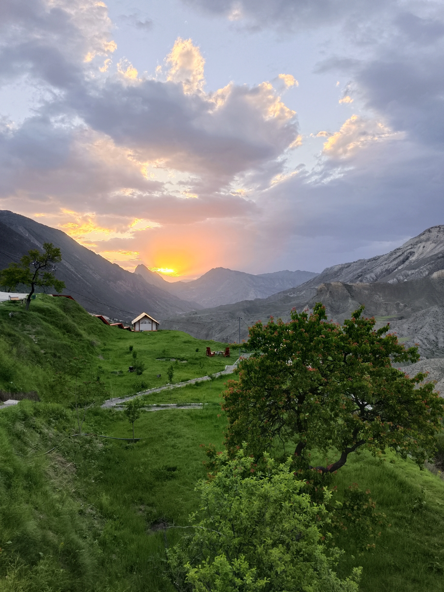
Остались вопросы? Напишите мне
- Профессиональный гид Опыт 5+ лет
- Лёгкий рюкзак Без палаток и еды
- Комфортный ночлег Баланс с природой
- Красивые пейзажи Фотосессии включены
- 3500 км маршрутов По горам Кавказа
- Сложный рельеф Требуется подготовка